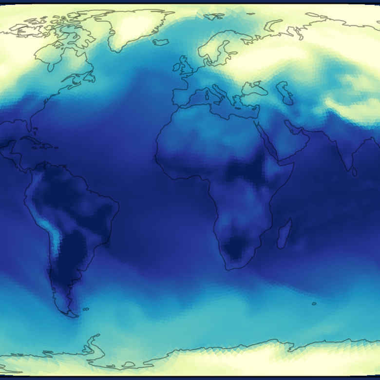

OmniField: Conditioned Neural Fields for Robust Multimodal Spatiotemporal Learning
A continuity-aware conditioned neural field that fuses sparse, irregular, multimodal measurements — via a multimodal crosstalk block and iterative cross-modal refinement — for reconstruction, forecasting, and cross-modal prediction without gridding, and stays robust under heavy sensor noise.